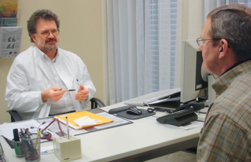

Um die Gesunderhaltung Ihrer Beschäftigten zu unterstützen, haben Sie eine weitere Chance: Die arbeitsmedizinische Vorsorge sieht vor, dass Beschäftigte auf Wunsch – also auch auf Ihren Wunsch als Unternehmer – medizinisch untersucht werden können, um die Folgen hoher Belastungen rechtzeitig zu erkennen.
In der Lastenhandhabungsverordnung § 3 wird gefordert, dass der Unternehmer die körperliche Eignung der Beschäftigten bei der Übertragung von Aufgaben der manuellen Handhabung von Lasten, die für die Beschäftigten zu einer Gefährdung für Sicherheit und Gesundheit führen, berücksichtigen muss. Der Arbeitsmedizinisch-Sicherheitstechnische Dienst – ASD der BG BAU bietet im Zusammenhang mit anderen fälligen Vorsorgeuntersuchungen, z. B. wegen Lärm, Staub- und Hautbelastungen, und somit am gleichen Tag diese Untersuchungen für Ihre Mitarbeiter an. Sie werden nach einem BG-Grundsatz für die arbeitsmedizinische Vorsorge (G 46 – Belastungen des Muskel-Skelett-Systems einschließlich Vibrationen) auf dem Stand der aktuellen medizinischen Erkenntnisse durchgeführt.
Als Ergebnis dieser Untersuchung erhält der Beschäftigte in einem Brief Informationen, Empfehlungen und Hilfsangebote für die Erhaltung und Wiederherstellung seiner Gesundheit. Der Beschäftigte erfährt, welcher Sport oder welches Fitnesstraining für ihn günstig ist, wie er sich am Arbeitsplatz ergonomisch sinnvoll verhalten kann, was er bei körperlichen Beschwerden tun sollte oder ob eine ärztliche Therapie oder Rehabilitation für ihn dringend zu empfehlen wäre.